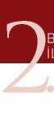

Şekil-10) MP5 Makinalı Tabancayı Kurarak Atış İstasyonu 2.2. MP5 MAKİNALI TABANCA İLE SABİT POZİSYONDA DEĞİŞİK
YÖNLERDEN ÇIKAN HEDEFLERE DOĞRU DÖNÜŞ ve ATIŞ TEKNİKLERİ
2.2.1. Öndeki Hedeflere Doğru Atış Pozisyonu ve Atış Tekniği Ani bir hareketle, silahı kurma tekniklerini uygulayarak silahınızı doldurun ve eş zamanlı olarak hızlı atış pozisyonuna geçin. Atışınızı bu pozisyonda yaptıktan sonra omuz boşluğundaki silahınızın dipçiğinin kaynağını bozmadan silahın namlusunu yere 70 derecelik bir açı ile aşağıya indirin. Verilen her atış
komutunda silahı hedefe kaldırarak “MP5 Makinalı Tabanca ile Hızlı Atış Te k -
niğindeki” kuralları uygulayarak atışa devam edin. (Bakınız Resim-13.a) UYARI
Burada dikkat edilmesi gereken nokta silahı hedefinize kaldırdığınız anda (eş zamanllı olarak) nişan hattınız oluşmuyorsa, nişan hattınızı oluşturmada zaman açısından geç kalıyorsanız veya başınızı silaha doğru eğiyorsanız, yapmanız gereken omuz boşluğundakki dipçiği biraz yukarı kaldırmak ve dipçiğin yüzünüze olan kaynağının baskısını artırmakttır. Bunlarla beraber yapılması gereken pozisyonunuzun tamamını gözden geçirmektir.